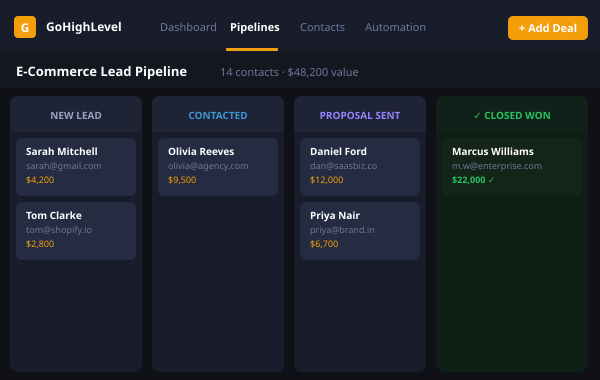

Every lead followed up. Every time. In minutes.
Leads go cold because follow-up depends on someone remembering. I build CRM pipelines and SMS/email sequences that respond instantly, track every contact and hand your team only the leads that are ready to talk.

The all-in-one CRM built for businesses that take their pipeline seriously
GoHighLevel (GHL) is a comprehensive CRM and marketing platform that combines pipeline management, two-way SMS/email, funnel building, calendar booking, reputation management, and marketing automation in a single platform. It eliminates the need for five separate tools, and the chaos that comes with them.
I build complete GoHighLevel systems, not just basic setups. I architect the full lead journey: from first touch to booked call to closed deal, with automated follow-up sequences, pipeline stage triggers, internal notifications, and reporting dashboards that give you a live view of your revenue machine.
Whether you're starting from scratch or migrating from a mess of spreadsheets and disconnected tools, I'll build a GHL system that fits your sales process and grows with your business.
Everything I can build in GHL
Pipeline Architecture
Custom pipelines mapped to your actual sales stages, with automation triggers, internal task assignments, and stage-move notifications built in from the start.
Lead Nurture Sequences
Automated SMS and email sequences that engage new leads immediately, follow up persistently, and escalate to a human at the right moment, without anyone pressing send.
Reputation Management
Automated review request workflows that increase Google and Facebook review volume after every successful transaction, building your public reputation on autopilot.
Calendar & Booking
GHL calendar setup with automated reminders, confirmations, and no-show follow-ups, integrated with your pipeline so every booked call is tracked as a pipeline event.
Content & Video Workflows
Automated content production workflows, from scheduling and generation triggers to distribution across platforms. Used for ongoing client-facing video and content operations.
Reporting Dashboards
Custom GHL dashboards that give you real-time visibility into pipeline value, conversion rates, source attribution, and team activity, so decisions are based on data, not gut feel.
From first call to live CRM system
A proven build process that gets your GHL system live and generating results fast.
Map your sales process
I get a deep understanding of how leads enter your business, how your team qualifies and nurtures them, and what the handoff looks like from marketing to sales to delivery. This shapes every decision in the build.
Configure the full system
Pipelines, automations, email/SMS sequences, forms, calendars, tags, custom values, built to spec and tested with sample data before going anywhere near live contacts. I document everything as I go.
Go live and hand over
I walk you and your team through the system on a live call, handle the migration of any existing data, and monitor the first week of live operation. Ongoing support available for iterations and additions.
Follow-up systems that close deals
Lead Nurture & Pipeline System
The problemPaid-ad leads landed in a spreadsheet and waited for whoever remembered to call. Over 60% went cold before first contact.
3× more booked calls from the same ad spend
Keystone — Lead Capture Funnel
The problemA property manager needed a steady flow of qualified owner leads instead of cold enquiries.
38 qualified consultations booked in the first 30 days from Google Ads traffic